Article
Take quiz
About us

Result
Your result displays how much you are stressed. "Normal" means you have normal amount of stress. A small amount of stress is common for an individual so need not worry. "Moderately Stressed" means your stress level a bit higher from normal and you need to take care of yourself. "Highly Stressed" means your stress level is alarming and you need to go easy on yourself because it can affect your health.
Disclaimer
This stress analysis questionare is not for medical diagnostic purposes. If you feel mentally burdened or drained it is best to see a therapist. This is like a first aid. We have provided toll free government helplines. At the end. Kindly check them out.

.png) 

A few ways to improve your mental health
We have divided this section into two parts-
- Manage stress by self care
- proffessional help
Manage Stress by Self Care
Lifestyle Changes
-
Make time to unwind. Try to do some other activities you enjoy.
-
Take breaks from watching, reading, or listening to news stories, including those on social media. It's good to be informed but hearing about the traumatic event constantly can be upsetting. Consider limiting news to just a couple of times a day and disconnecting from phone, tv, and computer screens for a while.
-
Avoid drugs and alcohol. These may seem to help, but they can create additional problems and increase the stress you are already feeling.
-
Recognize when you need more help. If problems continue or you are thinking about suicide, talk to a psychologist, social worker, or professional counselor.
Manage Daily Routine
- Mindful meditation with an app. If you'd like a little nudge to find your zen, help is at hand-in the palm of your hand, to be precise, with a host of meditation apps that can work wonders for helping you de-stress.
- Maintain a gratitude journal. Consider this as the '100 days of happiness' experiment, but with better longevity. Before you go to bed at night, list down the positive events that happened to you during the day to gain better perspective the next time things go haywire.
-
Write checklists. It may be easy to keep a running list in your head about all the things you need to do in a day, but with so many other matters fighting for attention in your headspace, you may just end up over-stressing yourself because of it.
Declutter your desk. There is some truth to our mothers' nagging words. There is something undeniably therapeutic about running your brain on low gear for a while by focusing on the manual aspect of clearing your desk or workspace.
Doing Physical Workout
- Exercise increases your overall health and your sense of well-being, which puts more pep in your step every day. But exercise also has some direct stress-busting benefits.
- It pumps up your endorphins. Physical activity may help bump up the production of your brain's feel-good neurotransmitters, called endorphins.
- It reduces negative effects of stress. Exercise can provide stress relief for your body while imitating effects of stress, such as the flight or fight response, and helping your body and its systems practice working together through those effects.
Let's move to next section now
Next